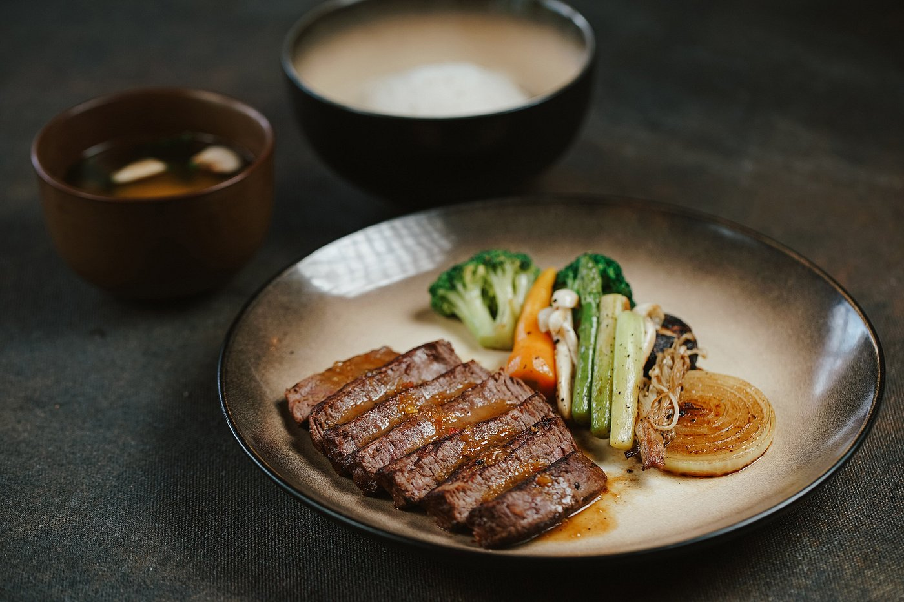
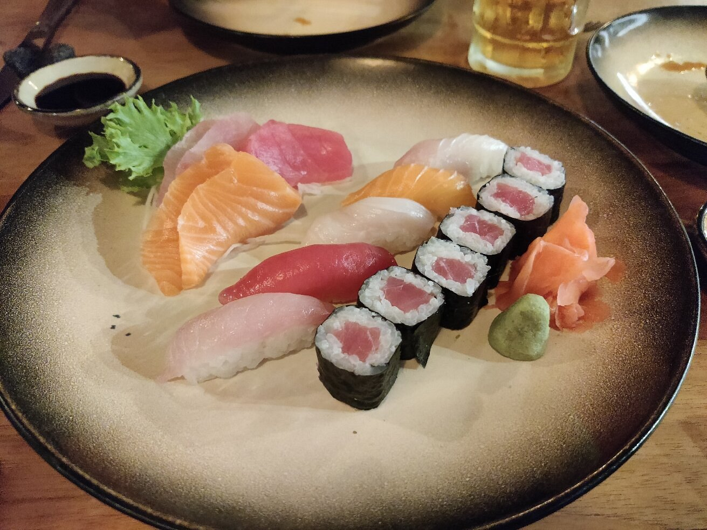
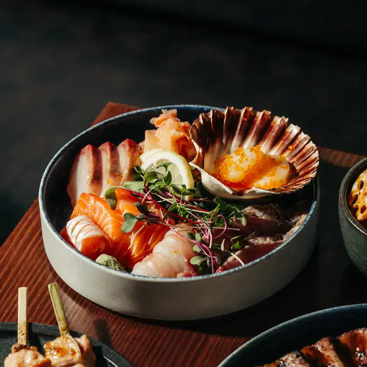
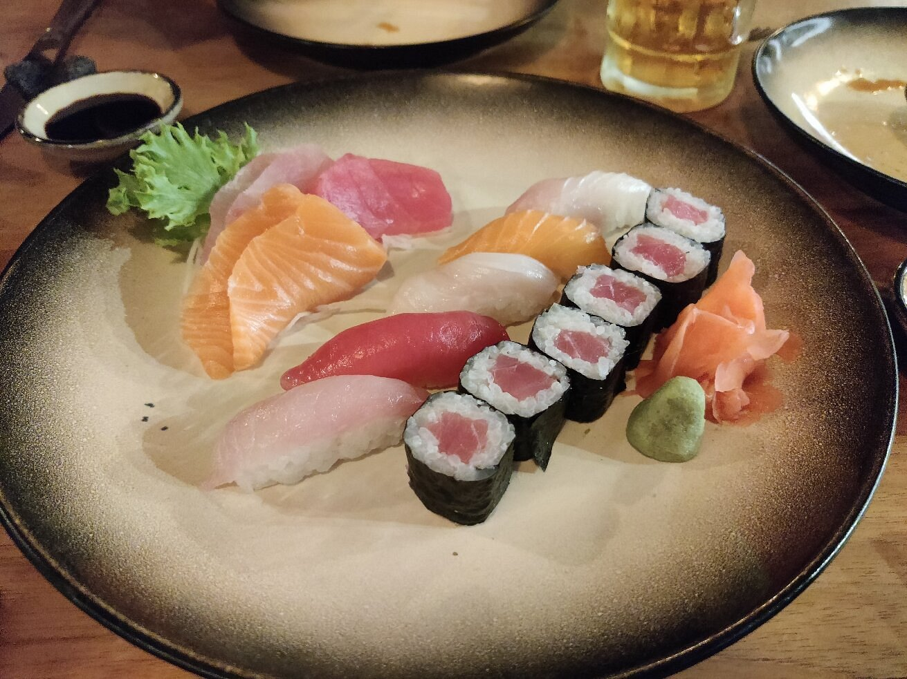
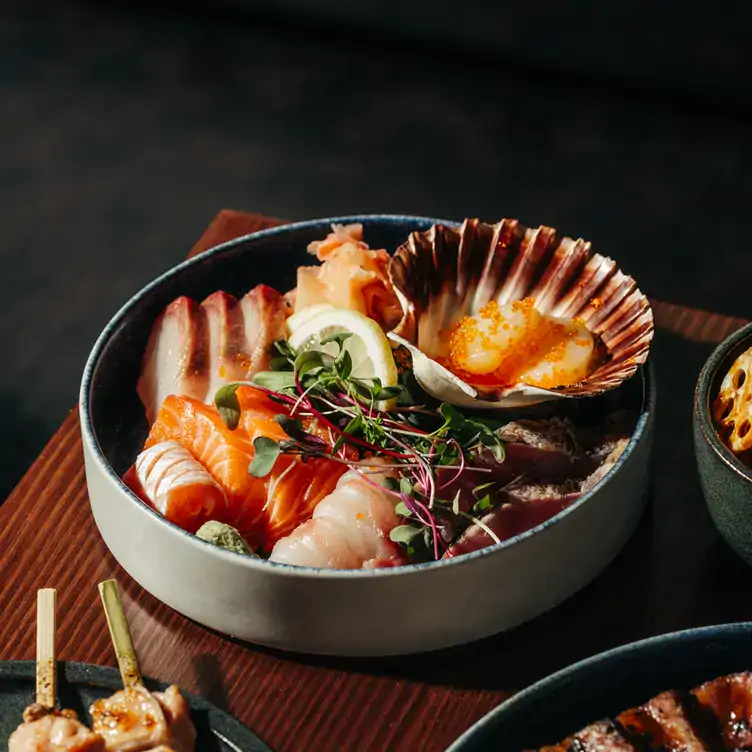
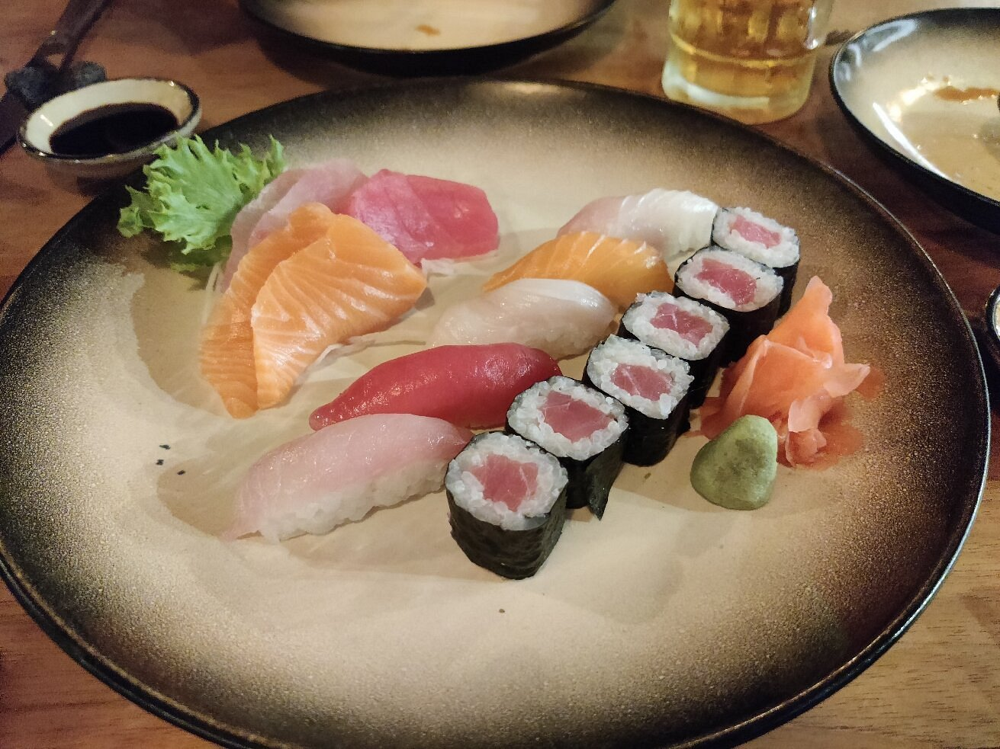
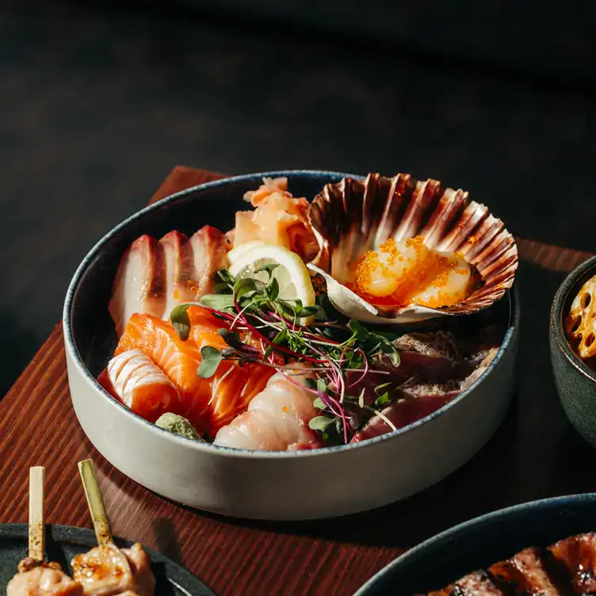
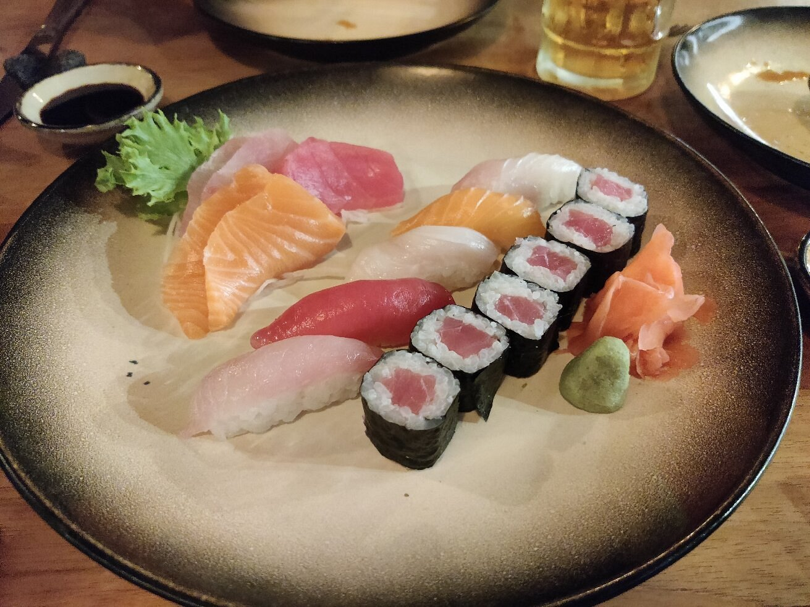
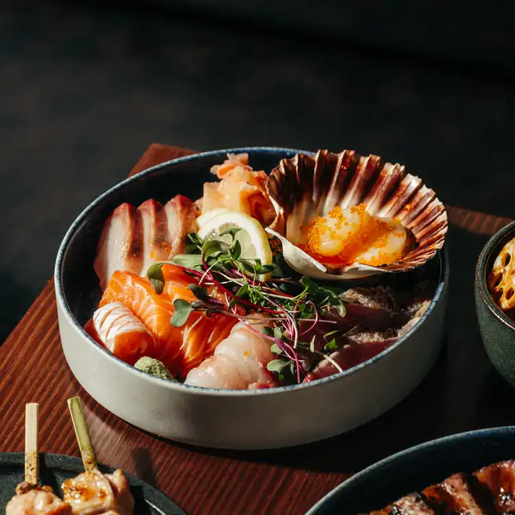

Our Specialities

 







Where Japanese Artistry Meets Modern Luxury
Herzlich willkommen bei SEIRYU — einem Ort, an dem traditionelle japanische Kochkunst auf moderne Eleganz trifft.
Hier wird Fine Dining zur Kunst, geprägt von Präzision, Ästhetik und außergewöhnlichen Aromen. SEIRYU verbindet ruhige japanische Ästhetik mit urbanem Luxus.
Edle Naturmaterialien, warmes Licht, dunkles Holz und feine Steinakzente schaffen eine exklusive, zugleich entspannte Welt. Der Duft von Binchotan-Holzkohle, dezente Musik und ein aufmerksamer, unaufdringlicher Service begleiten Ihr kulinarisches Erlebnis.
Ob für ein besonderes Dinner, einen exklusiven Anlass oder um außergewöhnliche japanische Küche zu genießen — SEIRYU steht für zeitlose Klasse, höchste Qualität und die perfekte Balance zwischen Tradition und Innovation.
Unsere Küche folgt einer klaren Philosophie: Reduktion auf das Wesentliche, Perfektion im Detail und ein kompromissloser Anspruch an Geschmack, Präsentation und Service.
For inquiries, please reach out to us at:
seiryu-bluedragon@gmail.com
+49 69 12345678